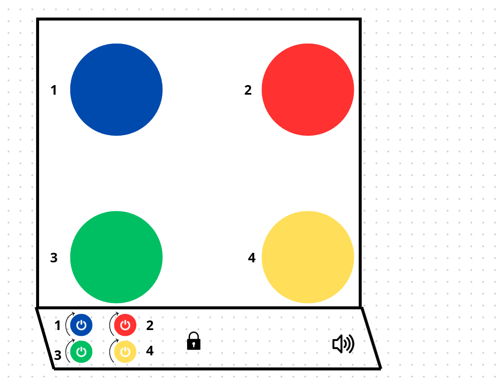

Apresentação do Projetista
Olá! Meu nome é Guilherme França de Paula. Atuo como desenvolvimento Web há 8 anos. Nesta proposta, apresento uma interface de fogão sem forno que reduz barreiras de uso e prioriza a segurança, contemplando diferentes perfis de usuário (cadeirantes, pessoas com baixa visão e/ou daltonismo, deficiência auditiva, estaturas variadas e mobilidade reduzida).
Nova Interface do Fogão
Conceito
O painel frontal é inclinado a 45° para melhorar o alcance e a leitura em pé ou sentado, especialmente em instalações abaixo da bancada para cadeirantes. Cada boca possui um botão giratório de grande diâmetro: pressionar no centro (ON/OFF) liga/desliga; girar define a intensidade da chama. Um anel de marcações/LEDs ao redor do botão reforça o nível atual. Há ainda um botão de trava de segurança e um controle de áudio para feedback sonoro opcional.
Necessidades Atendidas
- Acesso/alcance: painel frontal e inclinado facilita o uso por pessoas cadeirantes e com mobilidade reduzida.
- Baixa visão/daltonismo: números grandes (1-4) e cor por boca como reforço, não como única pista.
- Deficiência auditiva: feedbacks visuais (LEDs/anéis de nível, ícones claros) e rótulos textuais.
- Diferenças de estatura: leitura frontal legível à distância, sem curvar o corpo.
- Segurança: trava geral, estados visuais claros e layout que reduz acionamentos acidentais.
Usabilidade & Acessibilidade Aplicadas
- Compatibilidade cognitiva: interação direta por boca (não precisa “selecionar” antes).
- Mapeamento claro: numeração 1–4 espelhando a posição das bocas.
- Alto contraste
- Redundância (cor + número + LED/anel + texto).
- Foco visível nos links e navegação por teclado prevista.
Cores, Formas, Sons, Texturas
- Cores: esquema de alto contraste; cada boca com cor de reforço.
- Formas: botões circulares grandes com anel graduado (níveis).
- Sons: beep curto ao ligar/desligar (opcional) e mudo disponível.
- Texturas: relevos na borda dos botões para orientação tátil.
Manual de Utilização
Identificação dos Controles
- Botões giratórios 1–4: um por boca. Pressione para ligar/desligar; gire para ajustar a intensidade (0–9).
- Anel/LED de nível: indica visualmente a intensidade atual da
- Trava de segurança: bloqueia/desbloqueia todos os botões (mantenha pressionado por 2s).
- Áudio: ativa/desativa beeps de confirmação.
Passo a passo: acender e ajustar
- Verifique se a trava está desativada (ícone cadeado apagado).
- Coloque a panela sobre a boca desejada (ex.: 2).
- Pressione o botão giratório da boca escolhida para ligar.
- Gire o botão até alcançar a intensidade desejada (observe o anel/LED).
- Ao terminar, pressione novamente para desligar e confirme o anel/LED apagado.